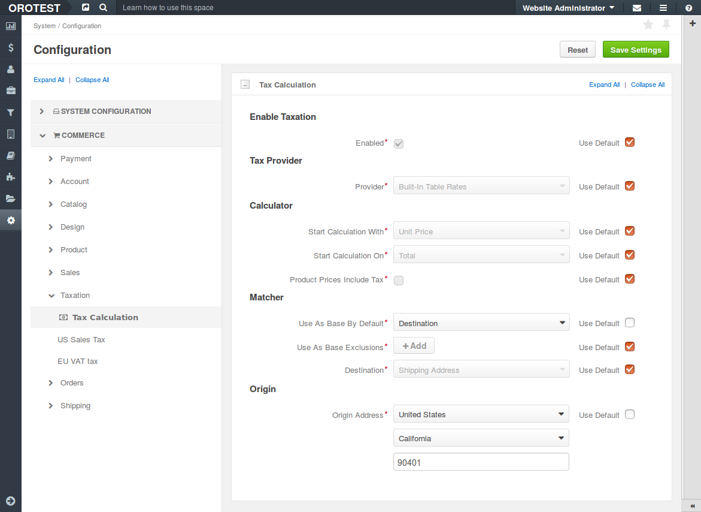

Overview
By default, OroCommerce calculates tax using a rate defined in the built-in tax rule (Managing tax rules) for the default shipping origin address.
To edit configuration options that impact the way OroCommerce implies tax in the Purchase Order or Quote, navigate to System > Configuration > Commerce > Taxation and perform the necessary configuration:
- Enable or disable tax calculation for the products you sell.
- Select a tax provider. OroCommerce build-in Table Rates (the tax rules defined in Managing tax rules section) are used by default. Alternatively, with some customization, you can use external tax management and compliance system, like AvaTax or Vertex, as a tax provider. See Integration with external tax management systems for more information.
- Apply taxes per single item in the purchase order or per total for the requested amount of the items of same kind. This may minimize roundoff accumulated error and secure you and your customers from over or under paying.
- Configure how OroCommerce selects the core jurisdiction whose tax rules should be applied in a purchase order tax calculation. Tax jurisdiction may be defined by either shipping origin, billing address, or shipping destination.
- Set up any tax jurisdiction exceptions - countries and states where tax jurisdiction selection should deviate from the core rule. For example, when the main tax jurisdiction is at the sale shipping destination, the exception may be for some countries and states to use shiping origin instead.
- Decide wheather the tax is included into the product price. When this option is enabled, the product price displayed in the purchase order will increase by the value of tax for this product item. Note: This may complicate the tax returns and deduction for your customers who are businesses.
- Configure a shipping origin address that will be used system-wide for origin-based tax. When the shipping origin is a core jurisdiction, OroCommerce will use the address provided here to find the matching built-in tax jurisdiction rules for tax calculation.
Sample configuration for tax calculation

Available actions:
Note
Remember to clear the Use default flag before setting a custom option.
- In Enable Taxation section, enable or disable taxation by setting or clearing the Enabled box.
- In Tax Provider section, keep the default Built-in Table Rates or, if you have extended the default capabilities and set up an integration, select your custom tax management system.
- In Calculator section:
With Start Calculation With, specify the formula for tax calculation. Tax is calculated either for unit price or for a product total price. Formula for Unit price is:
tax = [ ( unit price * tax rate ) * unit quantity ] + ... + [ ( unit price * tax rate ) * unit quantity ].
Formula for Row Total is:
tax = [ (unit price * unit quantity) * tax rate ] + ... + [ (unit price * unit quantity) * tax rate ].
- With Start Calculation On option, select when the rounding off shall happen. For Item, the taxable ammount is rounded up for every item. For Total, the total tax is aggregated as is, and the final amount is rounded up.
- Set or clear the Product prices include tax option. When product prices include tax, the tax ammount is substructed from unit, product, or total price. Otherwise, the tax is added on top of the unit, product, or total price.
In Matcher section:
- Select the default tax jurisdiction base:
- For origin-based jurisdiction, select Shipping Origin, or
- For destination-based jurisdiction, select Destination.
- Specify all countries and states/regions that do not follow the default tax jurisdiction base. Click + Add, select a country, type in state or region and select the alternative tax jurisdiction base.
- If you use destination as tax jurisdiction base by default or for any exclusions, select either Shipping Address or Billing Address as Destination.
In Origin section, provide the origin address (e.g. location of your warehouse or company legal address). For the origin-based jurisdictions, OroCommerce uses this address to find the matching tax rule.